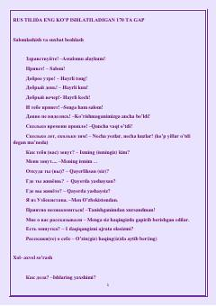

RTRus tilidagi eng zarur 170 ta kundalik ibora va ularning o'zbekcha tarjimalari.
Ushbu qo'llanma rus tilida kundalik hayotda eng ko'p ishlatiladigan 170 ta ibora va gaplarni o'z ichiga oladi. Unda salomlashish, hol-ahvol so'rash, minnatdorchilik bildirish va xayrlashish kabi turli vaziyatlar uchun kerakli ruscha iboralar va ularning o'zbekcha tarjimalari keltirilgan.